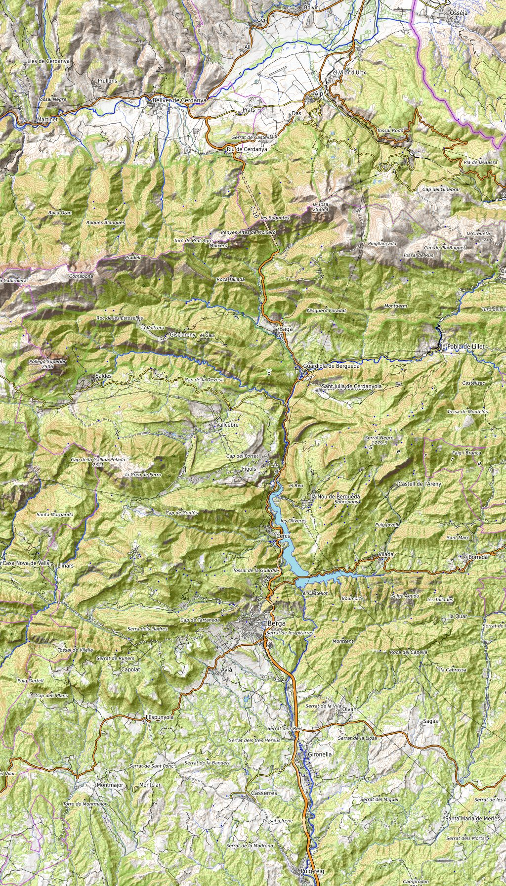

⚠️ Importante: esta guía sirve para aprender y llevar tu diario, no para decidir qué se come. Los dibujos son orientativos. Ante la mínima duda no la comas y enséñala a una sociedad micológica. Las mortales están marcadas en rojo.
Guía de setas
Las que aún no has encontrado salen apagadas. Cuando marcas una en una salida, se ilumina. Toca cualquiera para ver su ficha.
🔎 Identificar por rasgos
⚠️ Esto reduce la lista para aprender a fijarte en lo importante, no confirma qué seta es. Las tóxicas y mortales posibles salen primero: si hay alguna, no te la juegues.
Salidas
Cada salida con su punto en Google Maps, el tiempo de esa zona ese día, las especies que encontraste y fotos.
Mapa de tus sitios
🗺️ Investigar sitios nuevos en El Territorio ↗
No se ha podido cargar el mapa. Tus sitios siguen en la lista y se abren en Google Maps.
Datos del mapa: © colaboradores de OpenStreetMap, SRTM · Estilo: © OpenTopoMap (CC-BY-SA)
Toca un sitio para ver sus salidas y abrirlo en Google Maps.
Estadísticas
Hallazgos por mes
Cuántas especies distintas encuentras cada mes, sumando todas las salidas y todos los años.
Lo que más encuentras
Tus mejores sitios
Temporada ahora
Cuándo ir
Lluvia y setas
Próximas temporadas
Temporada a temporada
Año a año
Copia de seguridad
Descarga todas tus salidas para guardarlas donde quieras. El Excel se abre directamente; la copia completa sirve para restaurar el diario si algún día hace falta.
Logros
Se desbloquean solos según vas apuntando salidas. Bronce, plata y oro, unos cuantos ocultos, y un platino para quien los consiga todos.